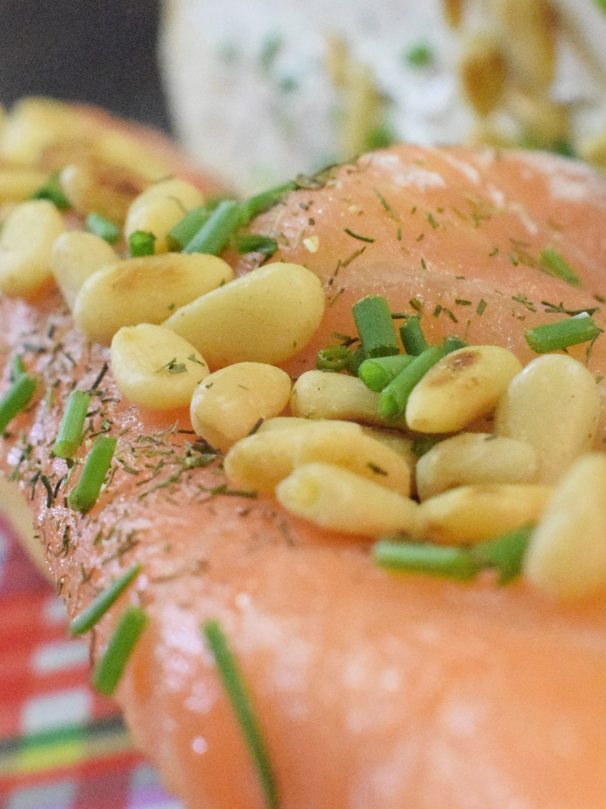

Mixx lunch arrangement A
€ 11,002 1/3 stokbrood bruin/wit per persoon, divers beleg-assortiment en salades
Mixx Broodjes Tilburg. Broodjes, koffie & meer!
Een groot deel van onze producten maken we vanaf de basis zelf. Geen fan van een ingrediënt? Zeg het gerust, we passen je broodje aan.

De favorieten die op onze menukaart een stempel krijgen. Weet je niet wat je wilt? Begin hier.
De juiste ingrediënten zijn in huis om de meest gezonde broodjes voor jou klaar te maken. Wij zijn ervan overtuigd dat het maken van broodjes en salades echt ambacht is. Daarom maken wij een groot deel van de producten vanaf de basis zelf.
Je mag aangeven wat je wel en niet op je broodje wilt, daar doen we niet moeilijk over. Heb je een hekel aan één ingrediënt maar lijkt de rest van het broodje je heerlijk? Geen probleem. We passen het broodje speciaal voor jou aan.

Rosbief en carpaccio van slagerij Le-Jeune.
Smoske erbij? Sla, tomaat, komkommer, ei en mayonaise voor 1,50 extra.
Van Vis en Meer.

Maak je eieren of omelet compleet met:
3 sneetjes brood en 3 gebakken eieren met:
Met 3 stukjes stokbrood en kruidenboter.
Opgemaakt met gemengde sla, tomaat, komkommer, ei, augurk en rauwe ui. Inclusief stokbrood en kruidenboter.

Statiegeld 0,15.
10 Hoort bij Mixx's top 10. Prijzen in euro's.
Naast onze gewone service verzorgen wij complete lunches voor bedrijven in de regio Tilburg. Zowel warme als koude lunches, met verse producten voor de lunch op het werk. Iedere dag of een keer per week: het kan allemaal bij Mixx Broodjes.
Wij komen graag langs om de wensen voor de lunch te bespreken en af te stemmen op uw personeel. U bent ook altijd welkom om bij ons langs te komen, de koffie staat klaar.

2 1/3 stokbrood bruin/wit per persoon, divers beleg-assortiment en salades
2 witte reuzenbollen per persoon, divers beleg-assortiment en salades
4 zachte mini broodjes per persoon, divers beleg-assortiment en salades
Een lunch arrangement bestelt u een dag van tevoren.
Andere wensen? Neem gerust contact met ons op en vraag naar de mogelijkheden.
Meld het bij een van onze medewerkers. Per broodje staan alle allergenen op onze allergenenlijst.
Wandelboslaan 40 A
5042 PD Tilburg